Yoga
Yoga is essentially a spiritual discipline based on an extremely subtle science, which focuses on bringing harmony
between mind and body. It is an art and scince of healthy living. The word ‘Yoga’ is derived from the Sanskrit root
‘Yuj’, meaning ‘to join’ or ‘to yoke’ or ‘to unite’. Yoga is an ancient practice that involves physical poses, concentration, and deep breathing.

Yoga Postures
Boat Pose - Navasana
Boat Pose balances the entire body on your sitting bones. It resembles a boat, which also balances on water. This pose
builds your center core and is associated with willpower and strength of character. It is recommended that you work on
your core early on in your yoga practice. This can help you remain committed to your yoga and meditation practice. In
the process you will reap great benefits as well as washboard abs.
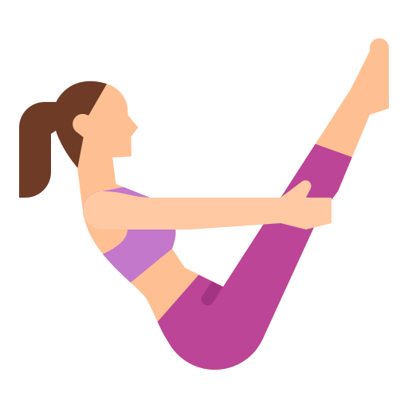
Benefits:
This is a great yoga pose for strengthening the abdominal muscles, lower back, hips, thighs and arms. It targets every part of your stomach, reducing fat from the waist, as it improves blood flow to the abdominal and pelvic organs.
Steps:
- From a seated position, extend arms parallel to the floor.
- Raise legs so that your body forms a V shape.
- Balance your weight on both buttocks evenly.
- Keep shoulders, neck and face relaxed.
- Extend your arms and legs in a diagonal stretch.
- Hold this pose for 3-8 breaths and focus on extending your spine and legs away from each other.
Bow Pose - Dhanurasana
This pose looks like an archer's bow, the torso and legs are the body of the bow, and the arms the string. With regular practice, you can maintain eternal youth, as bow pose provides mental stimulation with increased energy and vitality.
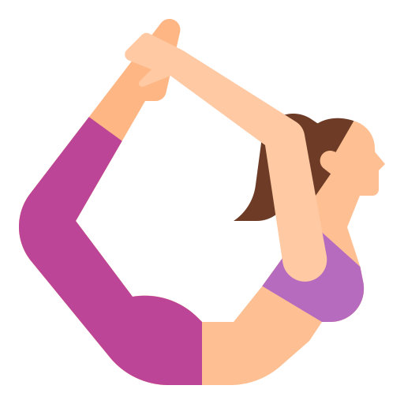
Benefits:
Bow Pose is great for strengthening the abdominal core. To reach it's full potential, you can rock back and forth. This
motion gives your entire abdominal area an excellent massage and activates your digestive system, and fights
constipation.
Steps:
- Grab both feet just under toes from outside of foot.
- Kick legs up, (legs no wider than 8 inches apart) Check that both feet are the same height, thighs are parallel and shoulders are even.
- Balance on your stomach.
- Look forward and up. Face is parallel to the front wall.
- Release and look to the right.
Child's Pose - Balasana
Child's pose is an excellent resting pose that's practiced in almost every yoga class. It is useful after strenuous
postures like headstand in order to restore the body's natural circulation or as a counter pose to back bends. It's a
very calming pose that can put you into a deep relaxation. The pose is called Child's pose because you form the shape of
a baby and your spine is curved naturally like a fetus.
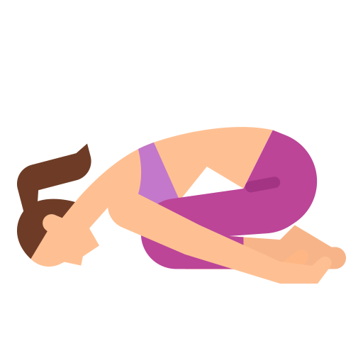
Benefits:
Performing Child's pose has many great benefits to the body and mind. Your head is lower then your heart, therefore you
receive more circulation in the face. It works on muscle groups within the body and can be a natural therapy for
relieving stress, anxiety, fatigue and depression.
Steps:
- Knees are at least hip width apart.
- Rest your front ribs on the tops of your thighs.
- Forehead is on the floor. Heels are apart, big toes touching.
- Arms can be down by the feet (palms facing up), or arms can be extended forward. (palms facing down).
- Press hands and feel your sitting bones on the mat.
- Hold this pose for about 10 deep breathes.
Cat Pose - Bidalasana
Cat Pose allows you to focus on movement with breath. This is important in your yoga practice. Placing your focus on
your breath helps you relax and keeps you calm. In this pose, with every inhale, you curve your spine down, lifting your
head up. As you exhale, you draw your chest and belly in. You repeat this movement a few times. This increases
flexibility of the spine, keeping it strong and lengthened.
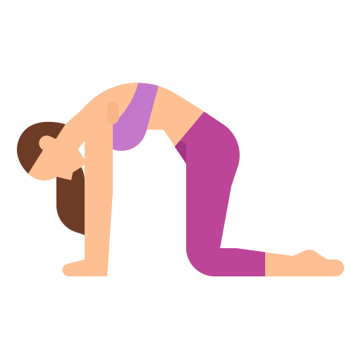
Benefits:
Cat Pose is a rejuvenating pose that relieves stress, especially after a long hard day. It massages the abdominal organs and stretches the spine and the whole upper back area. It also improves circulation in the spine and core area.
This is a great pose for those with any back, shoulder and neck pain, as it loosens and relaxes the muscles of the upper back and neck.
Steps:
- Get on your hands and knees. Relax your face and shoulders.
- Make sure your hips are above your knees and your shoulders are above your wrists.
- On an exhalation, lower your head and tuck you hips down and round your back.
- On an inhale, arch your back and lift your chest up.
- Link each movement with breath on your own time.
- You can repeat this sequence as many times as you like.
- Rest in child's Pose when done.
Camel Pose - Ustrasana
Camel Pose is an intense back bend, a progression from Bow pose and is a great heart opener. The camel is a strong animal. It represents the ability to accomplish the impossible and to go through life's challenges with ease. If you feel disconnected from the world, family/relationships or are struggling with forgiveness, practicing camel pose can help you express your feelings and find compassion towards others.
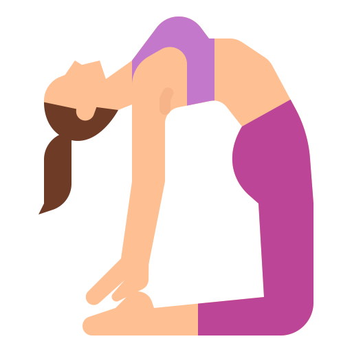
Benefits:
This pose is quite advanced, but well worth the benefits.
It benefits the body by tightening the thighs, waist and hips, strengthening the arms, shoulders, knees and thighs and massaging the kidneys and bladder.
Steps:
- Sit on your knees.
- Reach backwards, grab the left ankle with the left hand and right ankle with right hand.
- Inhale and lift the hips, arching the back and pushing the abdominals forward.
- Tilt your head back and open the chest.
- Hold this posture for 10-20 seconds.
- To come out, slowly place the hands on the lower back.
- Rest in Child's pose.
Cobra Pose - Bhujangasana
This pose is named Cobra because it resembles an upward position of a serpent snake. Cobra pose is beneficial in many ways, both physically and mentally. It works on opening up four chakras within the body. The root/sex, navel, heart and throat chakra. This helps to keep you balanced within. It's also great for those suffering with any back pain.

Benefits:
Cobra Pose opens up the chest and reduces tension, stress and fatigue within the body. It strengthens and tones the back
muscles and tissues along the vertebrae, therefore relieving any tension, aches and pains in the lower back. If
practiced on a regular basis it can help those with asthma, as it expands the chest area. It also helps to improve
posture and flexibility of the spine by working on the nerve junctions that run throughout the spinal cord.
Steps:
- Lie on your belly with your arms relaxed beside you.
- Turn your head to the centre and bend your arms so that your hands are placed beneath your shoulders. Keep your arms
close to your body.
- Inhale as you start to slowly arch your back. Lift up with you chest. Do not lift your pelvis.
- Hold this posture for about 5 seconds.
- To come out of the pose, slowly lower your abdomen, chest, shoulders and head to the floor.
- Relax your arms and body, and rest.
Downward Dog - Adho Mukha Svanasana
Downward Dog is the most common pose recognized in yoga classes and is known for it's many therapeutic benefits. It is
mostly seen and is the main component of the yoga sun salutation series. This pose resembles a dog stretching itself
out.
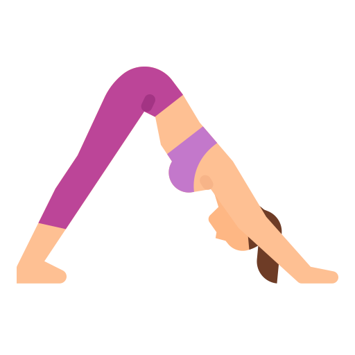
Benefits:
Downward dog creates great sensations within the body. From your toes up to your hips, and down to your finger tips. As
you go deeper within the pose, you neutralize the spine, then bring it back to its natural alignment.
This pose is excellent for athletes by strengthening the hands, wrists, back, hamstrings and calves, while creating
balance throughout the entire body.
Steps:
- Start in an all-fours position, on your hands and knees.
- Feet should be hip width apart, hands shoulder width apart and fingers spread apart.
- Slide the shoulders back and away from your ears.
- Pull your stomach in.
- Gaze between your feet.
- Hold this pose for 5 breaths.
Fish Pose - Matsyasana
This pose is known as "the destroyer" of all disease. It resembles the fish. Because of it's ability to float in the water, this posture releases inhibitions of the lungs, allowing them a greater capacity to fill up with air. Therefore this pose is excellent for the respiratory system.
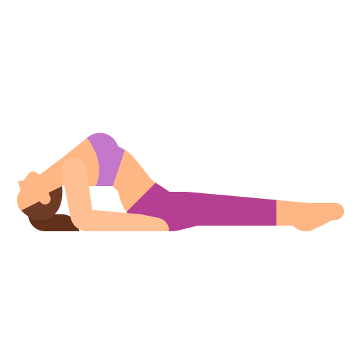
Benefits:
The fish is a great stretch for the upper body, as it opens the lungs, heart, back and abdomen. It provides extra oxygen
into the lungs. Deep breathing in the pose is encouraged to enhance the pose as it provides extra oxygen into the lungs.
It also stretches the bronchial tubes, which is great for people with asthma, as it promotes easier breathing.
Steps:
- Lie on your back with your legs in lotus position (or cross legged).
- Arch your back as much as you can while raising your head off the ground while pushing into your elbows.
- Rest the crown of your head on the floor.
- Use your forearms and elbows to support you.
- Expand your chest, breathe deeply into your abdomen.
- To come out of the pose, push into your elbows, lift your head off the mat, and come into a lying down position.
Legs Up - Viparita Karani
Legs up Pose is a restorative one. It's a mild inversion with many benefits as the full headstand, but in a more gentler and supported way. The body is relaxed, with the feet above the heart, allowing the heart to rest. Resting is different than sleep, as it gives the body an opportunity to renew and heal itself with many physical and emotional benefits.
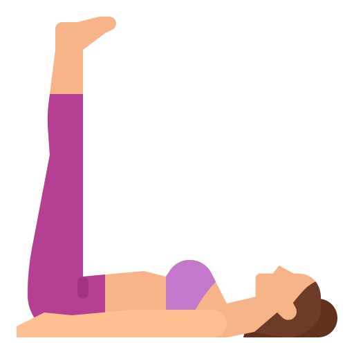
Benefits:
This is a milder inversion that has been know to cure any ailment. It's a very gentle pose suitable for beginners, as your legs are supported on a wall. It relieves tired, aching feet, stretches the legs, back and neck and helps relieve backaches. It also allows those unable to perform the full headstand to reap the benefits of inversions. Those with any neck, shoulder, eye or ear injuries can also enjoy the pose.
Steps:
- Bend your legs so that you can move your body into a 90 degree angle with your torso against a wall.
- Relax your arms away from your sides and close your eyes.
- As you inhale, bring in positive thoughts and qualities you desire.
- As you exhale, visualize releasing all tension and anxiety.
- Try to sink your body closer to the floor.
- Repeat steps 3 and 4 as long as you wish.
- Slowly come out of this pose.
Plank Pose - Chaturanga Dandasana
Plank pose is a very common posture. It is a transitional mostly seen in the Sun Salutations series of a yoga class. It is also seen in the sports world as an exercise for strengthening and toning your core.
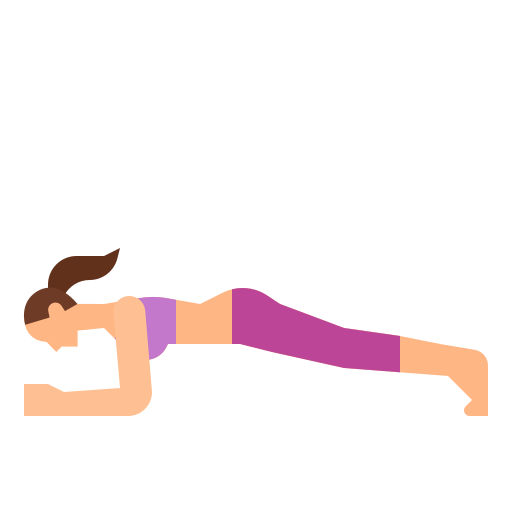
Benefits:
When performed correctly, having your body in one line parallel to the floor, you can notice the most benefit. It targets many area of the body, and is well known for strengthening and toning the core. It also works on tightening the shoulders, arms, wrists and quads.
Steps:
- From Downward Dog, lower your torso down so it's parallel to the floor.
- Keep your shoulders over your wrists.
- Press your fingertips to the floor with equal weight on both hands.
- Make sure your body is in one straight line head to toes.
- Squeeze your belly in, keeping your shoulders away from the ears.
- Gaze towards the floor relaxing your face and eyes.
- Hold this pose 30 seconds or longer.
Standing Forward Bend - Uttanasana
Standing forward bend is a well known posture that's practiced in the Sun Salutation series. In Sanskrit it means to extend. In the pose you are stretching the legs, thighs and spine. While bending forward there is improved circulation, as fresh blood and nutrients are moving down to the brain. This has a very calming affect on the body and mind. It's a very therapeutic posture for many discomforts.
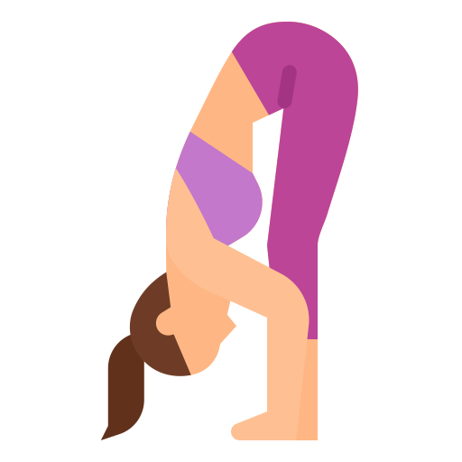
Benefits:
In a forward bend posture the spine takes shape of it's natural form, like in the womb. This improves digestion, lowers high blood pressure, helps those with asthma, infertility, headaches and insomnia. It also helps with any menopausal symptoms and reduces stress, anxiety, depression and fatigue.
Steps:
- Stand with feet hip width apart, make sure both feet are parallel on the floor.
- Bend forward from the hips.
- Reach your hands to the floor.
- Keep your knees soft and do not hyper extend.
- Shoulders should be relaxed and away from the ears.
- Head and neck should be completely relaxed.
- Seat bones should move up towards the ceiling, top of the head should move towards the feet.
Warrior I - Virabhadrasana I
Warrior I is one of the first poses originally learned in yoga and represents spiritual strength. This yoga pose is the
foundation of the standing pose series. It is highly recognized by both beginner and advanced yogis. It's great for
setting an intention for practice, as it opens up the body. It's a grounding pose that produces internal heat that
purifies the body. It provides balance, confidence and builds stamina.
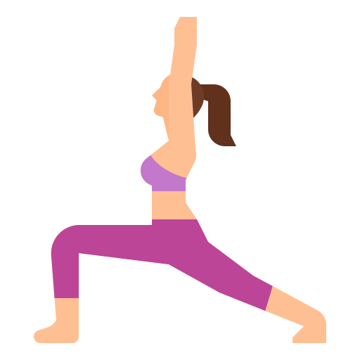
Benefits:
This posture strengthens the thigh muscles, arms, ankles and back muscles. It opens up the chest, lungs and shoulders and promotes flexibility in the hip flexors, groin and in the back of the legs.
Steps:
- From a lunge turn your left foot out to a 45 degree angle, and bring your right foot forward next to the right hand.
- Sink and square hips.
- Bend the right knee, make sure knee does not pass the ankle. Keep back knee straight.
- Keep the torso upright.
- Lift arms up (either together or separate if more comfortable).
- Shoulders should remain down the back.
- Look up to the hands but make sure not to crunch the back of the neck.
- Hold the pose for five to eight long breathes, then switch the feet around so that you are facing the back of the room.
- Then do the same thing on the other side with the left foot forward.